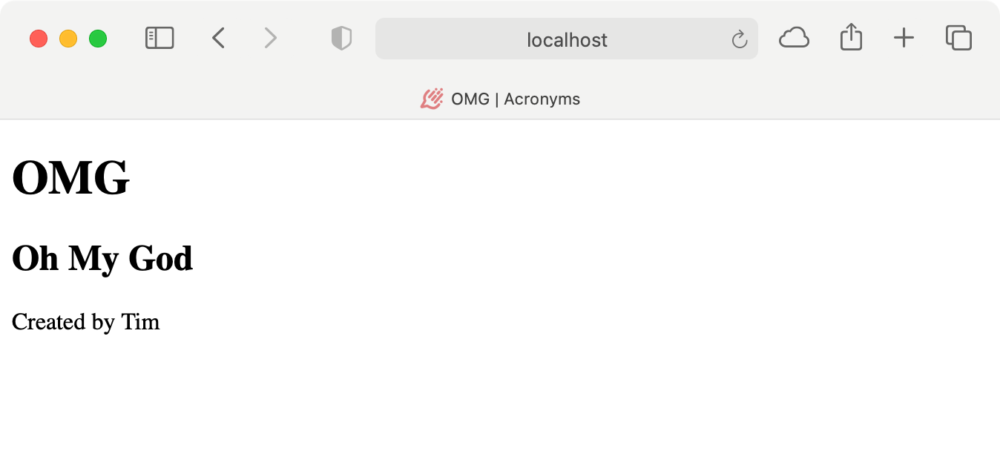
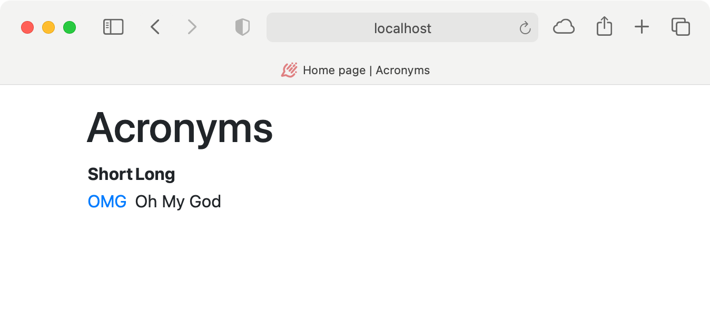
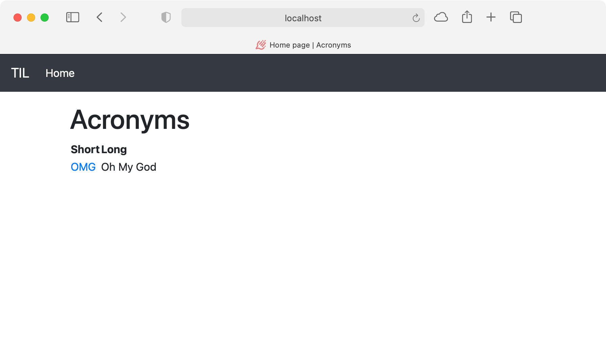
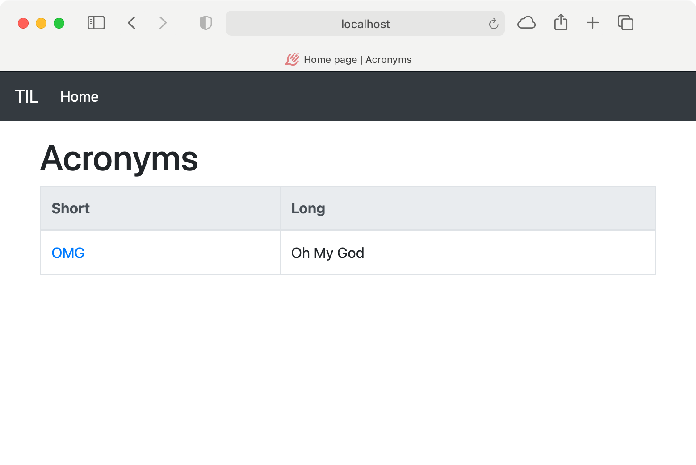
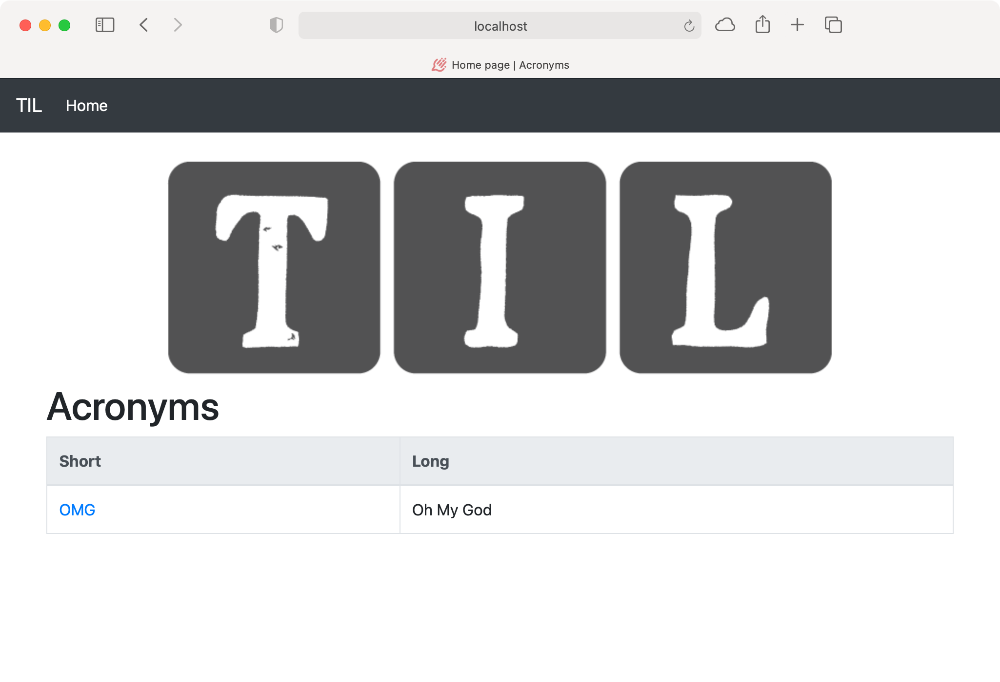
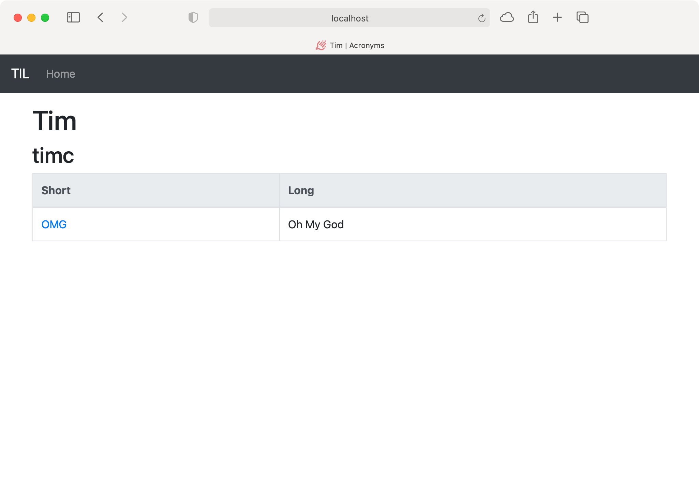
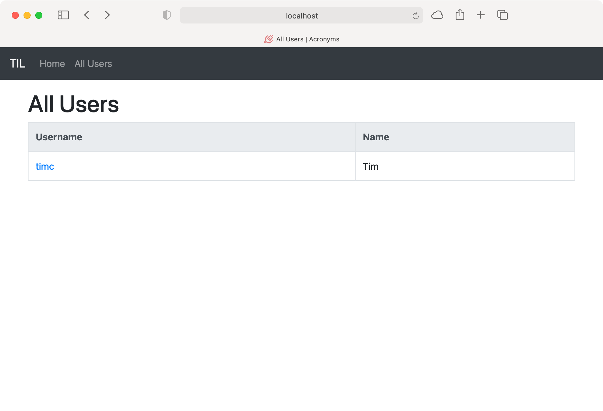

第15章：美化页面¶
在上一章中，你开始用Leaf建立一个强大的、动态的网站。然而，这些网页只使用了简单的HTML，并没有进行风格化处理--它们看起来并不漂亮 在本章中，你将学习如何使用Bootstrap框架来为你的网页添加样式。你还将学习如何嵌入模板，这样你只需要在一个地方进行修改。最后，你还会看到如何用Vapor提供文件。
嵌入模板¶
目前，如果你改变索引页的模板来添加样式，你将只影响到该页。你必须在缩略语详情页和任何其他未来的页面中复制样式。
Leaf允许你将模板嵌入到其他模板中。这使你能够创建一个"基础"模板，其中包含所有页面通用的代码，并在你的网站上使用它。
在Resources/Views中创建一个新文件，base.leaf。将index.leaf的内容复制到base.leaf。删除<body>和</body>标签之间的所有内容。剩下的代码应该类似于下面的内容：
<!DOCTYPE html>
<html lang="en">
<head>
<meta charset="utf-8" />
<title>#(title) | Acronyms</title>
</head>
<body>
</body>
</html>
这构成了你的基本模板，对所有页面都是一样的。在<body>和</body>标签之间添加：
#import("content")
这使用Leaf的#import()标签来检索content变量。要使用这个模板，请打开index.leaf，用下面的内容替换它：
#extend("base"):
#endextend
这告诉Leaf在渲染index.leaf时要扩展基础模板。base.leaf需要一个变量，content。添加以下内容，在#extend和#endextend之间，定义content：
#export("content"):
<h1>Acronyms</h1>
#if(acronyms):
<table>
<thead>
<tr>
<th>Short</th>
<th>Long</th>
</tr>
</thead>
<tbody>
#for(acronym in acronyms):
<tr>
<td>
<a href="/acronyms/#(acronym.id)">
#(acronym.short)
</a>
</td>
<td>#(acronym.long)</td>
</tr>
#endfor
</tbody>
</table>
#else:
<h2>There aren’t any acronyms yet!</h2>
#endif
#endexport
这需要index.leaf特有的HTML，并将其包裹在一个#export标签中。当Leaf按照index.leaf的要求渲染base.leaf时，它将content插入到基础模板中。
保存文件，然后构建和运行。打开你的浏览器，输入URLhttp://localhost:8080/。页面的渲染和以前一样：

Note
如果你用本章的启动项目重新开始，你需要在Xcode中设置一个自定义工作目录。如果你忘记了，Leaf会抱怨说它找不到一个名为index的模板。参见第14章，"用Leaf制作模板"，以获得更多信息。
接下来，打开acronym.leaf，并通过将其内容替换为以下内容来改变它以使用基础模板：
#extend("base"):
#export("content"):
<h1>#(acronym.short)</h1>
<h2>#(acronym.long)</h2>
<p>Created by #(user.name)</p>
#endexport
#endextend
同样，所做的改变是：
- 删除所有现在住在基础模板中的
HTML。 - 扩展基础模板，引入通用代码并渲染
content。 - 使用
Leaf的#export()标签，将剩余的HTML存储在content变量中。
保存该文件，并在浏览器中导航到一个缩写页面。该页面会像以前一样用新的基础模板进行渲染：

Note
在调试模式下，你可以刷新页面以获取利图的变化。在发布模式下，Leaf缓存了页面的性能，所以你必须重新启动你的应用程序才能看到变化。
Bootstrap¶
Bootstrap是一个开源的网站前端框架，最初由Twitter建立。它提供了易于使用的组件，你可以将其添加到网页上。它是一个移动优先的库，使建立一个在各种尺寸的屏幕上工作的网站变得简单。
要使用Bootstrap，请到getbootstrap.com，点击Get Started。在撰写本文时，Bootstrap的版本是4.5。Bootstrap提供了一个CSS文件来提供造型，以及为Bootstrap组件提供功能的Javascript文件。你需要在所有页面中包含这些文件。由于你已经创建了一个base.leaf模板，这很容易做到
在Get Started页面，找到Starter模板部分。
在初始模板的<head>部分，复制两个<meta>标签--标记为"必需的元标签"--和CSS的<link>标签--标记为"Bootstrap CSS"。用新标签替换base.leaf中当前的<meta>标签。
在起始模板的底部，复制方案1中的两个<script>标签。把它们放在base.leaf模板中，在#import("content")下面和</body>标签之前。
保存该文件，然后在浏览器中访问http://localhost:8080。你会发现页面看起来有点不同。该页面现在使用了Bootstrap的样式，但你需要添加Bootstrap特有的组件，使你的页面真正闪亮。
打开base.leaf，用以下内容替换#import("content")：
<div class="container mt-3">
#import("content")
</div>
它将页面的内容包裹在一个容器中，这是Bootstrap的一个基本布局元素。<div>还在容器的顶部应用了一个空白。
如果你保存该文件并刷新你的网页，你会看到页面现在在两侧和顶部有一些空间，不再看起来很拥挤：

导航¶
TIL网站目前由两个页面组成：一个主页和一个缩略语详细页面。随着页面越来越多，要在网站上找到自己的方向会变得很困难。目前，如果你进入一个首字母缩写的详细页面，就没有简单的方法返回到主页了 为网站添加导航，可以使网站对用户更加友好。
HTML定义了一个<nav>元素来表示页面的导航部分。Bootstrap提供了一些类和工具来扩展这个元素的样式和移动支持。打开base.leaf，在上面添加以下内容 <div class="container mt-3">。
<!-- 1 -->
<nav class="navbar navbar-expand-md navbar-dark bg-dark">
<!-- 2 -->
<a class="navbar-brand" href="/">TIL</a>
<!-- 3 -->
<button class="navbar-toggler" type="button"
data-toggle="collapse" data-target="\#navbarSupportedContent"
aria-controls="navbarSupportedContent" aria-expanded="false"
aria-label="Toggle navigation">
<span class="navbar-toggler-icon"></span>
</button>
<!-- 4 -->
<div class="collapse navbar-collapse"
id="navbarSupportedContent">
<!-- 5 -->
<ul class="navbar-nav mr-auto">
<!-- 6 -->
<li class="nav-item
#if(title == "Home page"): active #endif">
<a href="/" class="nav-link">Home</a>
</li>
</ul>
</div>
</nav>
以下是这个新代码的作用：
- 定义一个
<nav>元素，用一些类名进行造型。Bootstrap使用这些类来指定一个Bootstrap导航栏，允许导航栏在中等尺寸的屏幕上是全尺寸的，并为导航栏应用一个黑暗的主题。 - 指定一个指向主页的根链接。
- 创建一个按钮，为小屏幕尺寸切换导航栏。这将显示和隐藏在下一个元素中定义的
navbarSupportedContent部分。注意，到navbarSupportContent目标的链接使用了转义的#以避免与Leaf的标签冲突。 - 为小屏幕创建一个可折叠的部分。
- 定义一个要显示的导航链接列表。
Bootstrap为这些nav-item列表项设计了导航条的样式，而不是标准的bulleted列表。 - 为主页添加一个链接。这使用
Leaf的#if标签来检查页面标题。如果标题被设置为"主页"，那么Leaf就为该项目添加active类。当在该页面上时，这将使链接具有不同的风格。
保存文件并在浏览器中刷新页面。该页面开始看起来很专业了! 对于小屏幕，你会得到一个切换按钮，它可以打开导航链接：

在大屏幕上，导航栏显示所有的链接：

现在，当你在一个缩写的详细页面上时，你可以使用导航条返回到主屏幕上!
表格¶
Bootstrap提供了一些类，可以轻松地设计表格。打开index.leaf，将<table>标签替换为以下内容。
<table class="table table-bordered table-hover">
这将为表格添加以下Bootstrap类：
table：应用标准的Bootstrap表格样式。table-bordered：给表格和表格单元格添加边框。table-hover：在表格行上启用悬停样式，这样用户可以更容易看到他们正在看的行。
接下来，用以下内容替换<thead>标签：
<thead class="thead-light">
这使得表头很突出。保存文件并刷新页面。现在，主页看起来更加专业了！

服务于文件¶
几乎每个网站都需要能够承载静态文件，如图片或样式表。大多数时候，你会使用CDN（内容交付网络）或Nginx或Apache等服务器来做这件事。然而，Vapor提供了一个FileMiddleware模块来服务文件。
要启用它，请在Xcode中打开configure.swift。在configure(_:)的开头添加以下内容（如果该行已经存在，则取消注释）。
app.middleware.use(
FileMiddleware(publicDirectory: app.directory.publicDirectory)
)
这增加了FileMiddleware到应用程序的中间件，以提供文件。它为你项目中Public目录下的文件提供服务。例如，如果你在Public/styles中有一个名为stylesheet.css的文件，它可以从/styles/stylesheet.css的路径访问。
本章的启动项目在Public文件夹中包含一个images目录，里面有一个网站的标志。如果你在前面的章节中继续自己的项目，把images文件夹复制到你现有的Public文件夹中。建立并运行，然后打开index.leaf。
在<h1>Acronyms</h1>上面添加以下内容：
<img src="/images/logo.png"
class="mx-auto d-block" alt="TIL Logo" />
这在页面中添加了一个<img>标签--图像--。页面从/images/logo.png加载图片，对应于Public/images/logo.png，由FileMiddleware提供。mx-auto和d-block类告诉Bootstrap将图片在页面中居中对齐。最后，alt值为图片提供了一个替代的标题。屏幕阅读器使用它来帮助无障碍用户。
保存该文件，并在浏览器中访问http://localhost:8080。现在主页显示了图片，为页面做了最后的修饰：

用户¶
该网站现在有一个显示所有首字母缩写的页面和一个显示某个首字母缩写的细节的页面。接下来，你将添加页面来查看所有的用户和一个特定用户的信息。
在Resources/Views中创建一个新文件，名为user.leaf。像这样实现模板：
<!-- 1 -->
#extend("base"):
<!-- 2 -->
#export("content"):
<!-- 3 -->
<h1>#(user.name)</h1>
<!-- 4 -->
<h2>#(user.username)</h2>
<!-- 5 -->
#if(count(acronyms) > 0):
<table class="table table-bordered table-hover">
<thead class="thead-light">
<tr>
<th>Short</th>
<th>Long</th>
</tr>
</thead>
<tbody>
<!-- 6 -->
#for(acronym in acronyms):
<tr>
<td>
<a href="/acronyms/#(acronym.id)">
#(acronym.short)
</a>
</td>
<td>#(acronym.long)</td>
</tr>
#endfor
</tbody>
</table>
#else:
<h2>There aren’t any acronyms yet!</h2>
#endif
#endexport
#endextend
以下是新页面的作用：
- 扩展基础模板，引入所有常用的
HTML。 - 为基础模板设置
content变量。 - 在
<h1>标题中显示用户的名字。 - 在
<h2>标题中显示用户的用户名。 - 使用
Leaf的#if标签和count标签的组合来查看用户是否有任何首字母缩写。 - 从注入的
acronyms属性中显示一个缩写表。这个表格与index.leaf模板中的表格是相同的。
在Xcode中，打开WebsiteController.swift。在文件的底部为用户页面创建一个新的上下文：
struct UserContext: Encodable {
let title: String
let user: User
let acronyms: [Acronym]
}
这个上下文有以下属性：
- 页面的标题，也就是用户的名字。
- 该页所指的用户对象。
- 该用户创建的首字母缩写。
接下来，为这个页面在acronymHandler(_:)下面添加以下处理程序：
// 1
func userHandler(_ req: Request)
-> EventLoopFuture<View> {
// 2
User.find(req.parameters.get("userID"), on: req.db)
.unwrap(or: Abort(.notFound))
.flatMap { user in
// 3
user.$acronyms.get(on: req.db).flatMap { acronyms in
// 4
let context = UserContext(
title: user.name,
user: user,
acronyms: acronyms)
return req.view.render("user", context)
}
}
}
以下是路由处理程序的工作：
- 为用户页定义路由处理程序，返回
EventLoopFuture<View>。 - 从请求的参数中获取用户，并解除对未来的包装。
- 使用
@Children属性包装器的项目值获得用户的首字母，并解包未来。 - 创建一个
UserContext，然后渲染user.leaf，返回结果。在这种情况下，如果缩略语数组是空的，你就不会把它设置为nil。这不是必须的，因为你在模板中检查计数。
最后，在boot(routes:)的末尾添加以下内容来注册这个路由：
routes.get("users", ":userID", use: userHandler)
这就为/users/<user ID>注册了路由，像API一样。建立并运行。
接下来，打开acronym.leaf，将<p>Created by #(user.name)</p>替换为以下内容，添加到新用户页面的链接：
<p>Created by <a href="/users/#(user.id)/">#(user.name)</a></p>
保存该文件，然后打开你的浏览器。转到http://localhost:8080，并点击其中一个缩写。该页面现在显示一个指向创建用户页面的链接。点击该链接访问你新创建的页面：

列出所有用户¶
在本章中，你要实现的最后一个页面显示所有用户的列表。在Resources/Views中创建一个新文件，名为allUsers.leaf。打开该文件并添加以下内容：
#extend("base"):
<!-- 1 -->
#export("content"):
<!-- 2 -->
<h1>All Users</h1>
<!-- 3 -->
#if(count(users) > 0):
<table class="table table-bordered table-hover">
<thead class="thead-light">
<tr>
<th>Username</th>
<th>Name</th>
</tr>
</thead>
<tbody>
#for(user in users):
<tr>
<td>
<a href="/users/#(user.id)">
#(user.username)
</a>
</td>
<td>#(user.name)</td>
</tr>
#endfor
</tbody>
</table>
#else:
<h2>There aren’t any users yet!</h2>
#endif
#endexport
#endextend
以下是新页面的作用：
- 为基本模板设置
content变量。 - 为所有用户显示一个
<h1>标题。 - 看看上下文是否提供了任何用户。如果有，创建一个包含两列的表：用户名和名字。这就像缩略语表。
保存该文件，在Xcode中打开WebsiteController.swift。在文件的底部，为该页面创建一个新的上下文：
struct AllUsersContext: Encodable {
let title: String
let users: [User]
}
这个上下文包含一个标题和一个用户数组。接下来，在下面添加userHandler(_:)，为新页面创建一个路由处理程序：
// 1
func allUsersHandler(_ req: Request)
-> EventLoopFuture<View> {
// 2
User.query(on: req.db)
.all()
.flatMap { users in
// 3
let context = AllUsersContext(
title: "All Users",
users: users)
return req.view.render("allUsers", context)
}
}
以下是新的路径处理程序的作用：
- 为"所有用户"页面定义一个路由处理程序，返回
EventLoopFuture<View>。 - 从数据库中获取用户并解开未来。
- 创建一个
AllUsersContext并渲染allUsers.leaf模板，然后返回结果。
接下来，在boot(routes:)的底部注册路由：
routes.get("users", use: allUsersHandler)
这就为/users/注册了路由，像API一样。建立并运行，然后打开base.leaf。在</ul>标签上方的导航栏中添加一个指向新页面的链接：
<li class="nav-item #if(title == "All Users"): active #endif">
<a href="/users" class="nav-link">All Users</a>
</li>
这将为/users添加一个链接，如果页面标题是"所有用户"，则将该链接设置为"激活"。
保存该文件并打开你的浏览器。
转到http://localhost:8080，你会在导航栏中看到一个新的链接。点击所有用户，你会看到新的"所有用户"页面：

分享模板¶
本章要做的最后一件事是重构你的缩写表。目前，索引页和用户信息页都使用了缩略语表。然而，你已经重复了该表的代码。如果你想对缩写表进行修改，你必须在两个地方进行修改。这是一个模板应该解决的问题!
在Resources/Views中创建一个新文件，名为acronymsTable.leaf。打开user.leaf，把表的代码复制到acronymsTable.leaf。这个新文件应该包含以下内容：
#if(count(acronyms) > 0):
<table class="table table-bordered table-hover">
<thead class="thead-light">
<tr>
<th>Short</th>
<th>Long</th>
</tr>
</thead>
<tbody>
#for(acronym in acronyms):
<tr>
<td>
<a href="/acronyms/#(acronym.id)">
#(acronym.short)
</a>
</td>
<td>#(acronym.long)</td>
</tr>
#endfor
</tbody>
</table>
#else:
<h2>There aren’t any acronyms yet!</h2>
#endif
In user.leaf, remove the code that’s now in acronymsTable.leaf and insert the following in it’s place:
在user.leaf中，删除现在在acronymsTable.leaf中的代码，在其位置上插入以下内容：
#extend("acronymsTable")
像使用base.leaf一样，这是将acronymsTable.leaf的内容扩展到你的模板中。保存该文件，并在你的浏览器中导航到一个用户的页面--它将显示该用户的首字母缩写，就像以前一样。
打开index.leaf，删除#if(acronyms)和它里面的所有代码。同样，在其位置上插入以下内容：
#extend("acronymsTable")
保存该文件。最后，打开WebsiteController.swift，修改IndexContext，使acronyms不再是可选的：
let acronyms: [Acronym]
acronymsTable.leaf检查数组的计数来决定是否显示表格。这样更容易阅读和理解。在indexHandler(_:)中，删除acronymsData，并将缩略语目录的数组传递给IndexContext：
let context = IndexContext(
title: "Home page",
acronyms: acronyms)
建立并运行该应用程序，并在浏览器中导航到http://localhost:8080。所有的首字母缩写词仍然会在那里。
接下来去哪？¶
现在你已经完成了这一章的内容，TIL应用程序的网站看起来好多了 使用Bootstrap框架可以让你轻松地设计网站的风格。这给访问你的应用程序的用户带来了更好的印象。
在接下来的章节中，你将学习如何从仅仅在页面上显示信息到实现所有的功能，以便能够创建首字母缩写、类别和用户。